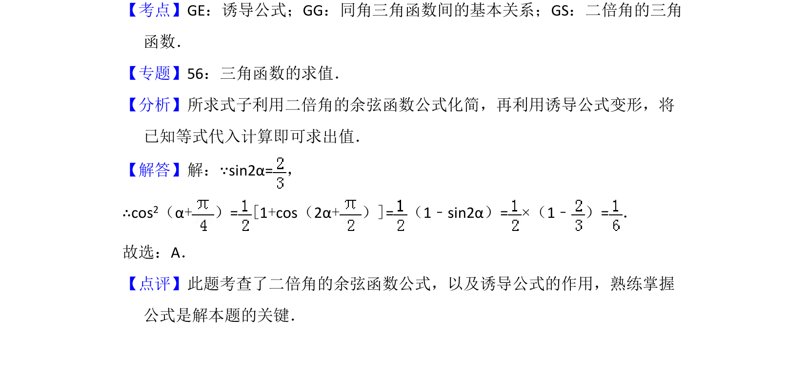

考点：诱导公式 二倍角的余弦公式 同角三角函数关系
本题已知 sin2α 的值，利用二倍角公式和诱导公式求 cos²(α+π/4) 的值。

📄 原 PDF 第 4 页：
素材/真题/吉林/2008-2024·（吉林）数学高考真题/2013年高考数学试卷（文）（新课标Ⅱ）（解析卷）.pdf
6．（5分）已知sin2α=，则cos 2（α+）=（ ） A．B．C．D．
【考点】GE：诱导公式；GG：同角三角函数间的基本关系；GS：二倍角的三角 函数．菁优网版权所有 【专题】56：三角函数的求值． 【分析】所求式子利用二倍角的余弦函数公式化简，再利用诱导公式变形，将 已知等式代入计算即可求出值． 【解答】解：∵sin2α=， ∴cos2（α+）=[1+cos（2α+）]=（1﹣sin2α）=×（1﹣ ）=． 故选：A． 【点评】此题考查了二倍角的余弦函数公式，以及诱导公式的作用，熟练掌握 公式是解本题的关键．